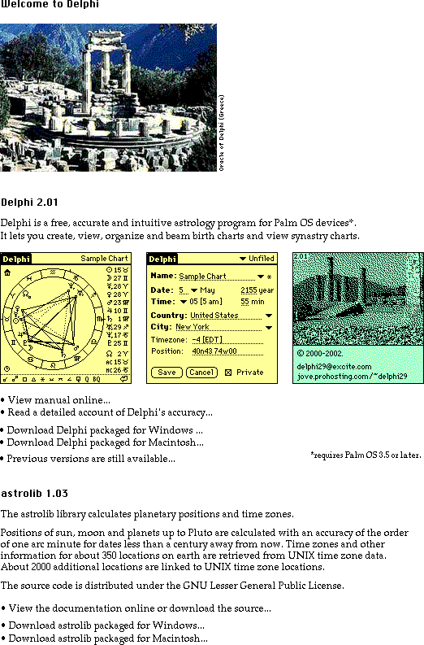
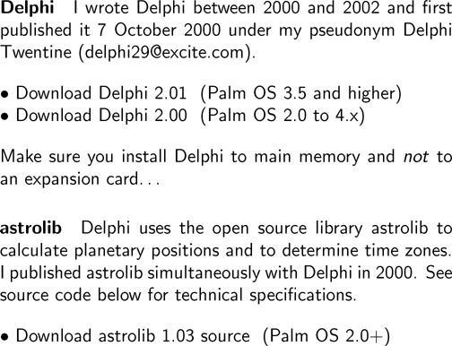

i i i i i i i i i i i i |
   Welcome to Delphi. Delphi Delphi is a free, accurate and intuitive astrology program for Palm OS devices*. It lets you create, view, organize and beam birth charts and view synastry charts. - View manual online... - Read a detailed account of Delphi's accuracy... - Download Delphi packaged for Windows ... - Download Delphi packaged for Macintosh... - Previous versions are still available... *requires Palm OS 2.0 or later. astrolib The astrolib library calculates planetary positions and time zones. Positions of sun, moon and planets up to Pluto are calculated with an accuracy of the order of one arc minute for dates less than a century away from now. Time zones and other information for about 350 locations on earth are retrieved from UNIX time zone data. About 2000 additional locations are linked to UNIX time zone locations. The source code is distributed under the GNU Lesser General Public License. - View the documentation online or download the source... - Download astrolib packaged for Windows... - Download astrolib packaged for Macintosh... Delphi I wrote Delphi between 2000 and 2002 and first published it 7 October 2000 under my pseudonym Delphi Twentine (delphi29@excite.com). - Download Delphi 2.01 (Palm OS 3.5 and higher) - Download Delphi 2.00 (Palm OS 2.0 to 4.x) Make sure you install Delphi to main memory and *not* to an expansion card... astrolib Delphi uses the open source library astrolib to calculate planetary positions and to determine time zones. I published astrolib simultaneously with Delphi in 2000. See source code below for technical specifications. - Download astrolib 1.03 source (Palm OS 2.0+) |